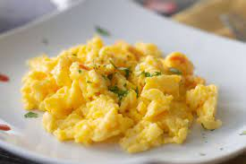

Scrambled Eggs
The ultimate breakfast, and super meal prepable. This dish is versatile and can be made to match almost anyone's tastes (unless they don't like eggs that is)
- Two eggs
- 1/4th cup of milk
- 1 tsp salt
- 1 tsp pepper
- Crack two eggs into a bowl
- Pour the milk, salt, and pepper into the bowl
- Use a fork or whisk to stir mixture until eggs and ingredients are well blended. They should have a smooth and creamy texture
- Use some butter, or oil spray to lubricate the pan
- Once the pan is hot, pour in the eggs slowly, and stir to keep them from burning
- When eggs have reached your desired consistency, remove onto a plate
- Serve with toast.